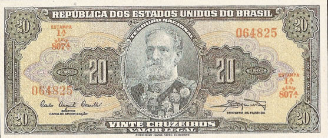

| Num |
Autógrafos e Chancelas |
Data |
Séries |
Tipo |
| C021 |
Autografada |
1943 |
001/460 |
Valor Recebido |
| C022 |
Carlos Augusto Carrilho /
Clemente Mariani |
1961 |
461/960 |
Valor Legal |
| C023 |
Reginaldo Fernandes Nunes /
Miguel Calmon |
1963 |
961/1260 |
Valor Legal |

Estampa:Anverso: Manuel Dedoro da Fonseca
Reverso: Proclamação da República
Cores:Anverso: Azul e policromia
Reverso: Rosa
Dimensões Básicas: 157mmx67mm
| Num |
Autógrafos e Chancelas |
Data |
Séries |
Tipo |
| C083 |
Autografada |
1950 |
001/370 |
Valor Recebido |
| C084 |
Claudionor de Souza Lemos /
Eugênio Gudin |
1955 |
371/870 |
Valor Recebido |
| C085 |
Claudionor de Souza Lemos /
Lucas Lopes |
1958 |
871/1175 |
Valor Recebido |
| C086 |
Affonso Almiro / Lucas Lopes |
1959 |
1176/1225 |
Valor Recebido |
| C087 |
Carlos Augusto Carrilho /
Sebastião P. de Almeida |
1960 |
1226/1575 |
Valor Recebido |
| C088 |
Reginaldo Fernandes Nunes /
Walter Moreira Salles |
1962 |
1576/2275 |
Valor Legal |
Estampa:Anverso: Manuel Dedoro da Fonseca
Reverso: Proclamação da República
Cores:Anverso: Sépia
Reverso: Sépia
Dimensões Básicas: 157mmx67mm
As imagens foram retiradas do livro "Cédulas Brasileiras de 1942 à 1991" e podem estar sobre copyright. Estão sendo aqui usadas como ferramenta de consulta.
Website desenvolvido em HTML 5, a linguagem do futuro! Feito em Adobe ™ Dreamweaver ® CS 5.5